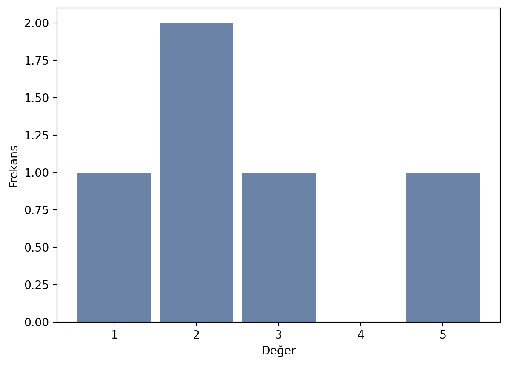
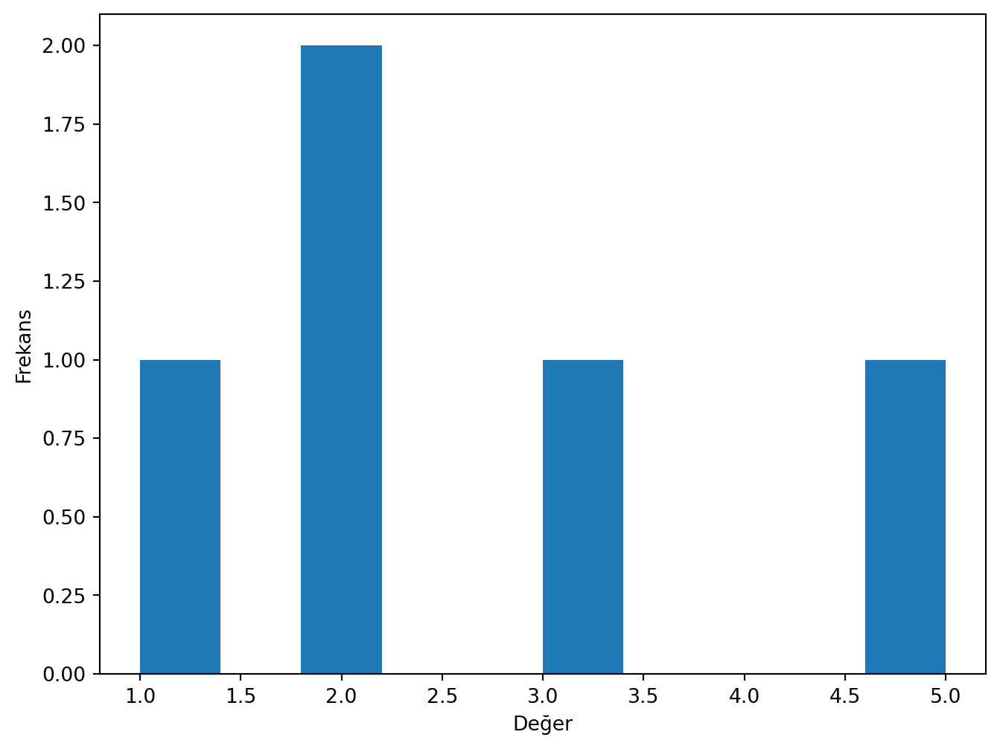
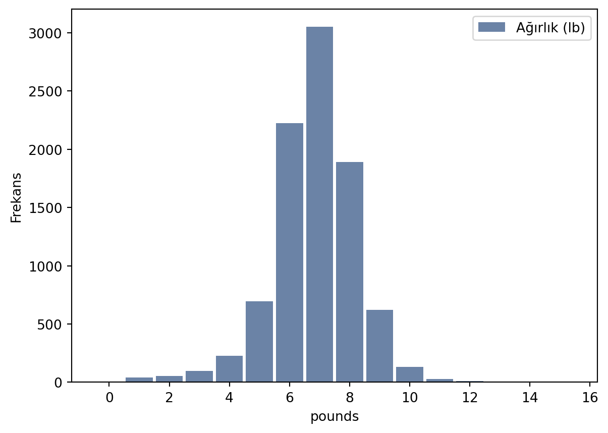
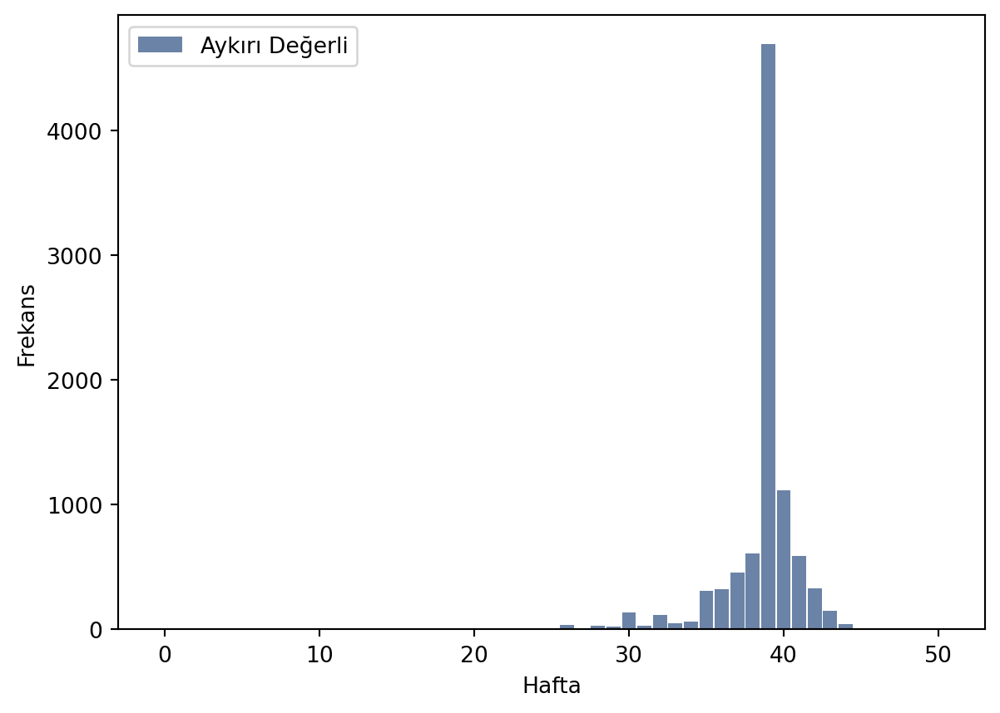
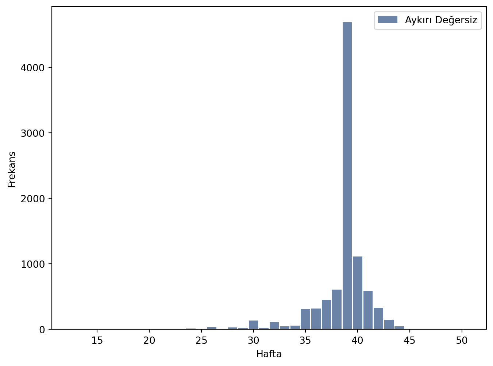
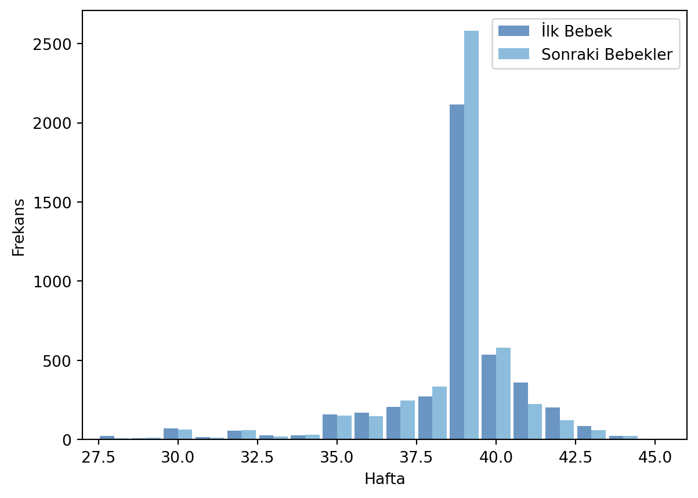

Uygulama - thinkstat2
Bu bölümde thinkstats2 kitabındaki bazı alıştırmaları çözeceğiz.
Thinkstats2 kitabına şu linkten ulaşabilirsiniz: https://greenteapress.com/thinkstats2/thinkstats2.pdf
Uygulamaları ise github sayfasından ulaşabilirsiniz. https://github.com/AllenDowney/ThinkStats2
İstatistiksel Bakış Açısı
Anekdot: “İlk çocuklar için hamilelik süresi daha uzundur.”
- Data Toplama (Data collection): Amerikan toplumu için çocuk doğum yaş verisini toplayalım.
- Açıklayıcı İstatistikler (Descriptive Statistics): Veriyi temel olarak açıklayan istatistiksel kavramlara bakalım.
- Veri Analizi Açıklama (Exploratory Data Analysis): Veriyi daha iyi anlamak için tekrarlara, farklılıklara veya diğer özelliklere bakalım.
- Tahmin (Estimation): Veriye göre bir model kuralım ve genel nüfus hakkında tahminde bulunalım.
- Hipotez Testi (Hypothesis Testing): Açığa çıkan etkileri, örneğin iki grup arasındaki farkı test edelim. Bu etkilerin olma olasılıklarını hesaplayalım.
Amerika Aile Büyüme Oranları
- Veri’nin alındığı site: National Survey of Family Growth (NSFG)
- Kullanacağımız veri, bir örneklem alarak yani Amerika’daki nüfusun bir kısmını seçerek elde edilmiş veridir.
- Cycle 6 verisi kullanılacaktır. Burada cycle kelimesi sürekli alınan bir çalışmadaki her bir örneklem anlamına gelir. Bu çalışmadaki toplanan veri Ocak 2002- Mart 2003 yılları arasında alınmıştır.
- Amacımız: Amerika’daki annelerin hamilelik sürelerine bakacağız. İlk kez doğum yapan annelerin hamilelik süreleri daha uzun mu daha kısa mı belirleyeceğiz.
- Kodkitabı (codebook): NSFG6 Codebook
Veriyi İçeri aktarma
- veri_thinkStats2_2002FemPreg.dat.gz dosyası sıkıştırılmış, hamilelik veri dosyasıdır. Her bir satıra kayıt (record) adı verilmektedir.
- veri_thinkStats2_2002FemPreg.dct dosyası da veri dosyasının “dictionary” formatındaki halidir. Kabaca söylemek gerekirse verinin açıklamalarını içermektedir. Bu ve bunun gibi dict dosyaları ileride kullanılacaktır.
Bu kitapta kullanılan fonksiyonlardan bir class oluşturulmuştur. Ancak kod kısmı eski olduğu için bazı kısımlarını yenileyeceğiz ve kendimiz yazacağız.
Data Çerçeveleri
Bu kitapta pandas paketi ile hazır olarak yazılmış fonksiyonlar kullanılarak yeni fonksiyonlar/class’lar tanımlanmıştır.
Değişkenler
veri_thinkStats2_2002FemPreg.dct dosyası içerisinde 244 adet değişken vardır. Kitapta kullanılacak olan bazıları şunlardır:
caseid: Her bir kayıt (respondent) için bir benzersiz numara.prglngth: Hamilelik süresi (hafta)outcome: Doğum sonucu (1= sağlıklı doğum)pregordr: Hamilelik sırası veya seri numarası: İlk hamilelik için 1, ikinci hamilelik için 2, vb.birthord: Sağlıklı doğan çocuğun seri numarası: İlk doğan için 1, ikinci doğan için 2, vb.birthwgt_lbvebirthwgt_oz: Doğum ağırlığı (pound) ve ağırlığın ons kısmı.- 1 oz = 28.34952 g (Ounce)
- 1 lb = 0.45359237 kg (Pound)
agepreg: Hamilelikteki yaş (yıl)finalwgt: Her bir kayıt için ağırlıklandırılmış (weighted) nüfus sayısı. Bu ağırlıklandırma, Amerika’daki nüfusun dağılımını yansıtmaktadır.
thinkstats2 Modülü
Bu bölümde başkasının yazdığı thinkstats2 modülünü kullanacağız. Bu modülün içeriğine bu linkten erişebilirsiniz.
Bu modülü bilgisayarınıza indirin. Eğer klasör olarak indirdiyseniz aşağıdaki gibi import edebilirsiniz.
Eğer dosyaları ayrı ayrı indirdiyseniz, dosyaları çalışacağınız scriptin içerisine almanız yeterli olacaktır.
Histogramların thinkstats Paketindeki Temsili
thinkstats2 paketinin içerisinde histogram oluşturucu (constructor) vardır.
# ============================
# thinkStats2 ile ilgili modülleri içeri aktarmak için gereken kod
from sys import path
from os import getcwd
from os.path import join
PWD = getcwd()
# Insert modules path
path.insert(0, join(PWD, "thinkStats2"))
# ============================
import thinkstats2
# Historgram oluşturucu. Veri: [1,2,2,3,5]
hist= thinkstats2.Hist([1,2,2,3,5])
print(f"hist objesi: {hist}")
print(f"hist objesindeki 2'nin frekansı: {hist.Freq(2)}")
print(f"hist objesinin ikinci elemanı: {hist[2]}")
print(f"hist objesindeki 4'nin frekansı: {hist.Freq(4)}")
print(f"hist objesinin dördüncü elemanı: {hist[4]}")
print(f"hist objesinin değerleri: {hist.Values()}")
print("-"*20)
# Hist objesinin elemanlarına erişmek
for it in sorted(hist.Values()):
print(f"hist[{it}] = {hist[it]}")
print("-"*20)
for val, freq in hist.Items():
print(f"hist[{val}] = {freq}")
print("-"*20)hist objesi: Hist({1: 1, 2: 2, 3: 1, 5: 1})
hist objesindeki 2'nin frekansı: 2
hist objesinin ikinci elemanı: 2
hist objesindeki 4'nin frekansı: 0
hist objesinin dördüncü elemanı: 0
hist objesinin değerleri: dict_keys([1, 2, 3, 5])
--------------------
hist[1] = 1
hist[2] = 2
hist[3] = 1
hist[5] = 1
--------------------
hist[1] = 1
hist[2] = 2
hist[3] = 1
hist[5] = 1
--------------------Histogramların thinkstats Kullanarak Çizimi
pandas paketinde histogram çizimine eşdeğer olarak thinkplot paketinde de histogram çizim fonksiyonu vardır. thinkplot paketinin içeriğine bu linkten erişebilirsiniz.
Ayrıntılı bilgi için: http://greenteapress.com/thinkstats2/thinkplot.html
# ============================
# thinkStats2 ile ilgili modülleri içeri aktarmak için gereken kod
from sys import path
from os import getcwd
from os.path import join
PWD = getcwd()
# Insert modules path
path.insert(0, join(PWD, "thinkStats2"))
# ============================
import pandas as pd
import thinkstats2
import thinkplot
# Historgram oluşturucu. Veri: [1,2,2,3,5]
hist= thinkstats2.Hist([1,2,2,3,5])
# Histogram çizimi
thinkplot.Hist(hist)
# Histogram çizimini göster
thinkplot.Show(xlabel="Değer", ylabel="Frekans")
# Aynı işlemi pandas ile yapalım
dS= pd.Series([1,2,2,3,5])
# Histogram çizimi
dS.plot(kind='hist', xlabel="Değer", ylabel="Frekans")

NSFG (National Survey of Family Growth) Değişkenleri
2002 Yılında sağlık doğan çocukların ağırlıklarını veren histogram grafiğini çizelim. Bunun için nsfg modülünü kullanacağız.nsfg paketinin içeriğine bu linkten erişebilirsiniz.
# ============================
# thinkStats2 ile ilgili modülleri içeri aktarmak için gereken kod
from sys import path
from os import getcwd, pardir
from os.path import join, abspath
PWD = getcwd()
# Insert modules path
path.insert(0, join(PWD, "thinkStats2"))
# ============================
# ============================
# thinksStats2 dizini
thinkStats_dir= join(PWD, "thinkStats2")
# ============================
# ============================
# Verilerin olduğu dizin
# 3 üst dizine çık
veri_dir = join(abspath(join(\
PWD, pardir, pardir, pardir))\
, 'veri')
# ============================
# Modüller
import nsfg
import thinkplot
import thinkstats2
# Veriyi nsfg.ReadFemPreg() fonksiyonu ile oku
preg= nsfg.ReadFemPreg(dct_file=join(veri_dir,\
'veri_thinkStats2_2002FemPreg.dct'),\
dat_file=join(veri_dir,\
'veri_thinkStats2_2002FemPreg.dat.gz'))
# Kitapta bu adım aşağıdaki gibi verilmiştir.
# preg = nsfg.ReadFemPreg()
# preg[preg.outcome==1] => preg.outcome sütunundaki sadece 1 olan değerleri seç.
# Değişken "outcome: 1= live birth, Yani sağlıklı doğum
live= preg[preg.outcome==1]
# Aynı işlemi pandas ile yapmak isterseniz aşağıdaki gibi bir kod yazabilirsiniz.
#import pandas as pd
#a= pd.Series([1,2,3,4,5])
#print(a)
#print(a[1])
#print(a[a > 3])
# # Histogram oluşturucu
hist = thinkstats2.Hist(live.birthwgt_lb, label='Ağırlık (lb)')
# # Histogram çizimi (thinkplot)
thinkplot.Hist(hist)
thinkplot.Show(xlabel='pounds', ylabel='Frekans')
<Figure size 768x576 with 0 Axes>Yukarıdaki grafikten de görüleceği sağlıklı doğan çocukların büyük bir çoğunluğu 7 pound (3.175 kg) ağırlığında doğmaktadır. Burada en sık tekrar eden veri (mod, ortanca değer) yani en yüksek frekansa sahip olan veri 7’dir. Bu değere mod adı verilir.
Bu histogramın şekli normal dağılım şeklindedir. Bu dağılımın bir diğer adı da Gauss dağılımı’dır. Bu dağılımın bazı özellikleri:
- Ortanca değer mod değerine eşittir.
- Mod değerinin solunda ve sağında eşit olasılıkla dağılmış veriler vardır yani simetriktir.
Aykırı Değerler (Outliers)
Bazen verilerin dağılımında aykırı (outlier) değerler ortaya çıkar. Bu aykırı değerler veri toplanmasında veya çeşitli sebeplerden dolayı veri çatımızda olmuş olabilir. Bu değerleri analiz yaparken çıkartmamız gerekecektir.
Örneğin:
Hamilelik süre verisinde 10 haftadan düşük değerleri atmamız gerekecektir. Bu değer prglngth değişkeni ile verilir.
# ============================
# thinkStats2 ile ilgili modülleri içeri aktarmak için gereken kod
from sys import path
from os import getcwd, pardir
from os.path import join, abspath
PWD = getcwd()
# Insert modules path
path.insert(0, join(PWD, "thinkStats2"))
# ============================
# ============================
# thinksStats2 dizini
thinkStats_dir= join(PWD, "thinkStats2")
# ============================
# ============================
# Verilerin olduğu dizin
# 3 üst dizine çık
veri_dir = join(abspath(join(\
PWD, pardir, pardir, pardir))\
, 'veri')
# ============================
import nsfg
import thinkplot
import thinkstats2
# Oku
preg= nsfg.ReadFemPreg(dct_file=join(veri_dir,\
'veri_thinkStats2_2002FemPreg.dct'),\
dat_file=join(veri_dir,\
'veri_thinkStats2_2002FemPreg.dat.gz'))
# Sağlıklı doğumları seç
live= preg[preg.outcome==1]
# Histogram oluşturucu
hist = thinkstats2.Hist(live.prglngth, label='Aykırı Değerli')
# Histogram çizimi
thinkplot.Hist(hist)
thinkplot.Show(xlabel='Hafta', ylabel='Frekans')
# Aykırı değerleri çıkartıp tekrar çizdirme
# live.prglngth[live.prglngth > 10] => 10 haftadan büyük olanları seç
hist2 = thinkstats2.Hist(live.prglngth[live.prglngth > 10], label='Aykırı Değersiz')
# Histogram çizimi
thinkplot.Hist(hist2)
thinkplot.Show(xlabel='Hafta', ylabel='Frekans')

<Figure size 768x576 with 0 Axes>İlk Bebekler
Bu bölüme başlarken ilk anektodumuzdan hatırlayalım:
“İlk çocuklar için hamilelik süresi daha uzundur.”
Bu anektodun doğruluğunu görmek için annelerin gebelik sürelerine bakmamız gerekecek. İlk ve ikinci (sonrası) bebekler için kaç hafta gebelik süresi olduğunun histogramını çizelim. Bebeklerin aile içerisinde kaçıncı olduklarını birthord değişkeni ile verilir. Eğer birthord = 1 ise ilk bebektir.
# ============================
# thinkStats2 ile ilgili modülleri içeri aktarmak için gereken kod
from sys import path
from os import getcwd, pardir
from os.path import join, abspath
PWD = getcwd()
# Insert modules path
path.insert(0, join(PWD, "thinkStats2"))
# ============================
# ============================
# thinksStats2 dizini
thinkStats_dir= join(PWD, "thinkStats2")
# ============================
# ============================
# Verilerin olduğu dizin
# 3 üst dizine çık
veri_dir = join(abspath(join(\
PWD, pardir, pardir, pardir))\
, 'veri')
# ============================
import nsfg
import thinkplot
import thinkstats2
# Oku
preg= nsfg.ReadFemPreg(dct_file=join(veri_dir,\
'veri_thinkStats2_2002FemPreg.dct'),\
dat_file=join(veri_dir,\
'veri_thinkStats2_2002FemPreg.dat.gz'))
# Sağlıklı doğumları seç
live= preg[preg.outcome==1]
# İlk bebekler
ilkBebekler= live[live.birthord==1]
# Sonraki bebekler
sonrakiBebekler= live[live.birthord!=1] # Referanslara bakın.
# Histogram oluşturucu, ilk bebekler
ilkHist= thinkstats2.Hist(ilkBebekler.prglngth, label='İlk Bebek')
# Histogram oluşturucu, sonraki bebekler
sonrakiHist= thinkstats2.Hist(sonrakiBebekler.prglngth, label='Sonraki Bebekler')
# Histogram çiziminde dekorasyon
width = 0.45 # barların arasına boşluk bırakmak için. Varsayılan 0.9
thinkplot.PrePlot(2) # 2 tane çizim yapılacak (aynı grafikte)
thinkplot.Hist(ilkHist, align='right', width=width) # Sağdaki çizim
thinkplot.Hist(sonrakiHist, align='left', width=width) # Soldaki çizim
thinkplot.Show(xlabel='Hafta', ylabel='Frekans', xlim=[27, 46])
# Ekrana yazdır
print(f"İlk bebeğin gebelik süre ortalaması : {ilkBebekler.prglngth.mean()}")
print(f"Sonraki bebeklerin gebelik süre ortalaması: {sonrakiBebekler.prglngth.mean()}")
print("-"*20)
print(f"İlk bebeğin gebelik süresi, standat sapma : {ilkBebekler.prglngth.std(ddof=0)}")
print(f"Sonraki bebeklerin gebelik süresi, standat sapma : {sonrakiBebekler.prglngth.std(ddof=0)}")
print("-"*20)
print(f"İlk bebeğin gebelik süre verisinin boyutu : {ilkBebekler.prglngth.size}")
print(f"Sonraki bebeklerin gebelik süre verisinin boyutu: {sonrakiBebekler.prglngth.size}")
İlk bebeğin gebelik süre ortalaması : 38.60095173351461
Sonraki bebeklerin gebelik süre ortalaması: 38.52291446673706
--------------------
İlk bebeğin gebelik süresi, standat sapma : 2.791585069824391
Sonraki bebeklerin gebelik süresi, standat sapma : 2.6155761106844744
--------------------
İlk bebeğin gebelik süre verisinin boyutu : 4413
Sonraki bebeklerin gebelik süre verisinin boyutu: 4735<Figure size 768x576 with 0 Axes>İstatistiksel olarak, gebelik süresi ile kaçıncı doğum yapıldığı arasında bir doğrudan ilişki yoktur?
Kitapta “mean” olarak yukarıdaki değerden bahsedilme, “average” ise merkezi eğilimdeki mod olarak ifade edilmektedir. Biz bu iki kavram için şimdilik “ortalama” ve “mod” terimlerini kullanacağız.
Problemler
Problem 1
Yeni doğan sağlıklı bebeklerin ağırlıklarının (pounds biriminde, birthwgt_lb) dağılımını inceledik. Aşağıdaki işlemleri yapın ve ilgili soruları cevaplayın.
- Aynı işlemi doğumun ounce kısmı için yapın (
birthwgt_ozdeğişkeni ile.) Bu kısımı virgülden sonraki kısım olarak düşünebilirsiniz.- Dağılım için beklentiniz (estimation) nedir? Neden?
- Bazı değerlerin frekansı neden daha fazla?
- Aynı işlemi kilogram biriminde yapın (dönüşüm yaparak değişkeni ile.)
- Doğum yapan annelerin yaşlarını, yani
agepregdeğişkeni ile elde ettiğiniz dağılımı çizdirin.- Dağılım tipi nedir?
- Atadığınız değişkenin tipini
type()ekrana yazdırın. - Bu dağılımın modu nedir?
- Bu dağılımın medyanı nedir?
- Bu dağılım simetrik mi?
- En genç ve en yaşlı annelerin yaşları nedir?
- Doğum sürelerini, yani
prglngthdeğişkeni ile elde ettiğiniz dağılımı çizdirin.- Dağılım tipi nedir?
- Bu dağılımın modu nedir?
- Bu dağılımın medyanı nedir?
- En uzun ve en kısa doğum süreleri nedir?
- 21 haftadan küçük değerleri ve 45 haftadan büyük değerleri aykırı değer olarak kabul edin. Bu aykırı değerlerin sayısı nedir?
- Aykırı değerlerin toplam veriye oranı nedir?
- Sadece aykırı değerleri çizdirin.